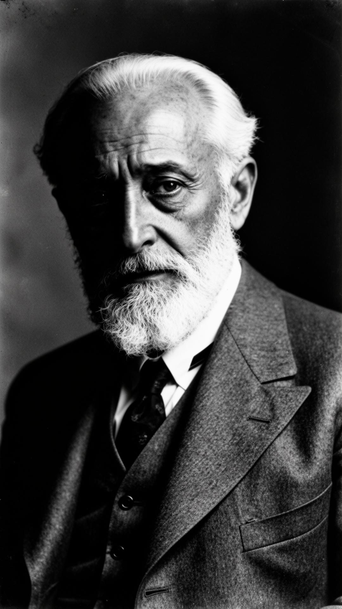

Il flusso
La vita è un movimento perenne. Fissarsi in una forma significa morire dentro.
Un ritratto editoriale
«La verità? È soltanto quella che ci creiamo noi.»
Drammaturgo, romanziere, Premio Nobel. Architetto della crisi dell'identità moderna: l'uomo non è più un individuo, ma un aggregato di maschere.

Apertura
È il 1904 quando Pirandello pubblica Il fu Mattia Pascal. Un romanzo in cui un uomo, creduto morto per errore, prova a ricominciare da capo — e scopre che fuori dalla forma sociale non c'è libertà, ma un vuoto.
Da quell'intuizione nasce un'intera filosofia: ogni identità è una costruzione collettiva. Siamo uno per noi, centomila per gli altri, e in fondo nessuno.
La vita è un movimento perenne. Fissarsi in una forma significa morire dentro.
Famiglia e lavoro non proteggono: imprigionano. Recitiamo ruoli che non ci appartengono.
Non il comico, ma il sentimento del contrario: vedere il dolore dietro il ridicolo.
Frammento · N° 47
«Imparerai a tue spese che nel lungo tragitto della vita incontrerai tante maschere e pochi volti.»
Uno, nessuno e centomila · 1926
Capitolo Primo · La Biografia
Una miniera che si allaga, una donna che impazzisce, un uomo che si accorge di non essere mai stato se stesso.
Fig. 01 · Ritratto d'archivio
Luigi Pirandello era sposato con una donna molto ricca. La ricchezza della sua famiglia veniva da una miniera di zolfo in Sicilia. Un giorno, però, accadde un disastro: la miniera si allagò, e la famiglia perse tutto.
La moglie, Antonietta, non resse il trauma. Iniziò a soffrire di una forma di follia — sospetti, paranoie, crisi violente — che avrebbe accompagnato Pirandello per decenni, fino al suo ricovero.
Vedere la propria vita cambiare in una notte. Vedere la persona amata diventare estranea, irriconoscibile. Fu da qui che Pirandello capì che nulla è fisso, e che ogni identità è una forma fragile sulla superficie di un abisso.
"Io sono figlio del Caos; e non allegoricamente, ma in giusta realtà, perché son nato in una nostra campagna, che trovasi presso ad un intricato bosco denominato, in forma dialettale, Càvusu.
— Luigi Pirandello · Frammento di autobiografia
Capitolo Secondo · Il Pensiero
Vitalismo, maschere, umorismo. Tre strumenti per smontare la realtà e scoprire che non si riaccende.
Pirandello prende il vitalismo dal filosofo Henri Bergson: la realtà è un divenire incessante, un flusso continuo di trasformazioni. Ogni essere passa da uno stato all'altro, e tutto ciò che si stacca da questo flusso è destinato a morire.
Ma l'uomo moderno vive al contrario. Si costruisce forme — nome, lavoro, famiglia, nazione — per resistere al cambiamento. Queste forme lo proteggono e insieme lo imprigionano. Fuori dalla forma c'è libertà assoluta, ma anche vuoto. Dentro la forma c'è identità, ma anche morte interiore.
Il paradosso pirandelliano: non possiamo vivere senza forme, ma non possiamo davvero vivere dentro di esse.
02 · Le Maschere
Ognuno di noi porta maschere diverse a seconda di chi ha davanti. Siamo figli con i genitori, colleghi in ufficio, amanti nella notte. Ma sotto tutte queste maschere, chi siamo davvero?
Pirandello demolisce le due grandi istituzioni borghesi: la famiglia e il lavoro. La famiglia non è il nido protettivo di Pascoli, ma un luogo di tensioni, ipocrisie e rancori. Il lavoro non realizza l'uomo, lo aliena, lo riduce a una funzione.
Questa critica resta puramente negativa. Non ci sono soluzioni, non ci sono alternative. Solo la lucida consapevolezza della prigione.
Saggio sull'Umorismo, 1908. Pirandello racconta un esempio semplice. Vedo passare una vecchia signora coi capelli tinti, il volto truccato in modo eccessivo, vestita come una ragazzina. Rido.
Avvertimento del contrario
Percepisco immediatamente il contrasto tra ciò che è e ciò che dovrebbe essere. Questo genera il riso. È il comico.
Sentimento del contrario
Poi interviene la riflessione. Forse quella signora soffre a pararsi così. Lo fa nell'illusione di trattenere l'amore di un marito più giovane. Non rido più. È l'umorismo.
L'originalità pirandelliana: mostrare il tragico dietro il comico. Il cuore della sua poetica è questo rovesciamento dello sguardo, che diventa comprensione della fragilità umana.
Capitolo Terzo · Le Quattro Opere
Dal romanzo dell'identità perduta al teatro dei personaggi immortali. La mappa dell'opera pirandelliana.